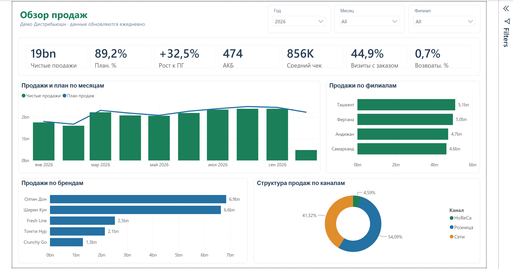

Старт
1 000 USD
- Продажи и план-факт
- Агенты, клиенты, АКБ
- Ежедневное автообновление
- Обучение 1 час
Power BI для дистрибьюторов · Узбекистан
Подключаю вашу учётную систему к Power BI. Данные загружаются каждое утро сами: продажи, план-факт, агенты, визиты, клиенты, склад и дебиторка. Без выгрузок в Excel и ручных сводок.

Все скриншоты сделаны на демо-данных вымышленной компании. На встрече покажу на ваших.
Цифры из демо-отчёта, сум.
Полный набор, 19 страниц в одном файле Power BI:
Одна фиксированная цена за проект. Абонентской платы нет, отчёты и обновление остаются вашими.
1 000 USD
2 000 USD
от 3 500 USD
Во все пакеты входит 30 дней бесплатных исправлений после сдачи. Оплата: 50% предоплата, 50% после приёмки. Лицензии Power BI оплачиваются отдельно по тарифам Microsoft.
Асомиддин Низамов, BI-аналитик. Более 9 лет в аналитике дистрибуции и продаж.
Напишите, какую систему вы используете, и договоримся о встрече.